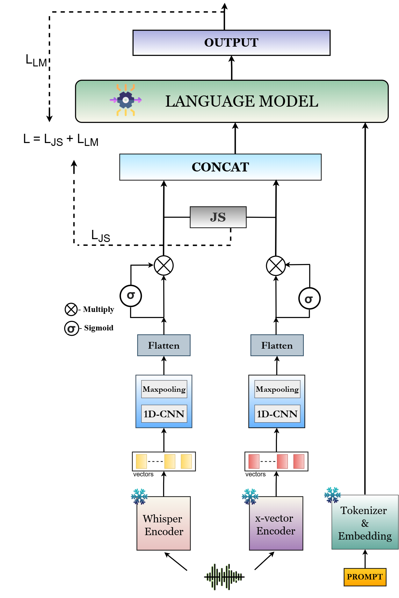

English · Codec-Fake
Fake audio synthesized via neural codec (SNAC, EnCodec, DAC…)
Codecfakes (CFs) are speech deepfakes generated by Audio Language Models (ALMs) whose core mechanism is Neural Audio Codecs (NACs). CFs exhibit distributional characteristics that differ fundamentally from vocoder-based deepfakes, causing state-of-the-art detectors to generalize poorly when crossing codec boundaries or language boundaries. Existing CF detection benchmarks remain largely confined to English (and to a limited extent Chinese), leaving South-East Asian (SEA) languages entirely unexplored.
To bridge this gap, we introduce SEA-CF, the first large-scale benchmark for CF detection spanning multiple SEA languages (Tamil, Hindi, Thai, Indonesian, Malay, Vietnamese), diverse speaker profiles, and a wide range of state-of-the-art NAC architectures. Our experiments confirm that SOTA CF detectors trained on English-centric data fail catastrophically on SEA speech, with accuracy dropping from 94.08% to 70.65%. Joint training with SEA-CF restores performance, underscoring the necessity of in-domain data.
We further perform comprehensive zero-shot and fine-tuned evaluations of recent SOTA ALMs on SEA-CF. While fine-tuning helps, large ALMs remain impractical in latency-constrained, low-resource settings. To address this, we propose GARUDA, a novel Small-ALM tailored for CF detection. GARUDA fuses complementary semantic (Whisper) and prosodic (x-vector) representations with a Jensen–Shannon alignment objective, and decodes using a lightweight Qwen2-0.5B language model. Extensive evaluations demonstrate that GARUDA achieves state-of-the-art performance across both SEA-CF and prior CF benchmarks while remaining under 1B parameters and offering 10× faster inference than large ALMs.
SEA-CF is constructed via a controlled resynthesis pipeline: real speech utterances are encoded into a discrete latent representation by a NAC encoder and reconstructed by the corresponding decoder, introducing codec-specific artifacts while preserving linguistic content and speaker identity. Each real utterance has a parallel codec-fake counterpart for every NAC configuration.
Real-Speech Source Corpora
One of the largest publicly available datasets for Indian languages, with predefined train/val/test-known/test-unknown splits used directly.
Standard Vietnamese speech corpus. Audio samples on this page are drawn from VIVOS — hear real vs. codec-synthesized pairs below.
Large-scale, multi-domain ASR corpus covering low-resource languages including Indonesian.
Thai dialect speech corpus used for spoken language research and ASR development.
Combination of the Conversational Malay Speech Corpus and a curated Malaysian YouTube dataset transcribed with Whisper-Large.
Massively multilingual open-source speech corpus providing supplementary coverage across all SEA languages.
Neural Audio Codecs (NACs)
Codec-fake samples are generated using 8 NAC architectures across multiple sampling rate configurations. Seen codecs are in training; Unseen codecs are held out for generalization evaluation.
Yellow = Seen (train & eval) · Blue = Unseen (eval only, for generalization testing)
GARUDA (Generative Audio Reasoning Under Dual-encoder Alignment) is a novel Small-ALM for codec-fake detection. It adopts a dual-encoder design that captures complementary semantic and prosodic cues, fuses them via a Jensen–Shannon alignment objective, and decodes using a lightweight language model.

The frozen Whisper-base encoder (74M parameters, 96-language pretraining) processes the input waveform and produces a 512-dimensional semantic embedding via average pooling. Its ASR-oriented pretraining makes it highly effective at encoding linguistic content across multiple languages.
A frozen x-vector TDNN model (4.2M parameters, VoxCeleb1+2 trained) extracts a 512-dimensional prosodic embedding via average pooling. Its speaker-recognition pretraining captures pitch, tone, and speaking-rate cues that complement Whisper's semantic focus.
Each encoder branch passes through a 1D convolutional layer (kernel size 3) followed by max-pooling and flattening. A sigmoid gating module selectively filters the representations, passing only the most informative features to the fusion stage.
Before fusion, the two feature vectors are converted to distributions via temperature-scaled softmax (τ = 0.5). The JS divergence loss LJS minimizes distributional discrepancy between the heterogeneous encoders, promoting information-level consistency prior to concatenation.
Aligned features are concatenated, projected through a 90-neuron FC layer, and injected as a continuous prefix into the Qwen2-0.5B decoder. The model is prompted: "Is the speech sample fake or real? Reply in one word 'fake' or 'real'." The LM objective minimizes negative log-likelihood of the target token. GARUDA-FT additionally fine-tunes the decoder with LoRA (rank=8, α=32, on Q and V projections).
74M params, frozen. 512-dim semantic embedding. Trained on 96 languages for ASR — captures linguistic structure.
4.2M params, frozen. 512-dim prosodic embedding. VoxCeleb-trained for speaker ID — captures pitch and tonal cues.
No added parameters. Encourages feature-space consistency between heterogeneous encoders before fusion (τ=0.5).
Smallest Qwen2 LM. Kept frozen in GARUDA; LoRA-finetuned in GARUDA-FT. Reduces hallucination and latency.
Rank=8, α=32. Applied to Q and V projection layers. Enables efficient decoder adaptation without full-model cost.
Whisper (74M) + x-vector (4.2M) + Projection + LoRA + Qwen2-0.5B = <1B total. 10× less than comparable ALMs.
Real Vietnamese speech (VIVOS corpus, speaker VIVOSDEV01) paired with its codec-fake counterpart synthesized using SNAC 24 kHz. Each fake is generated by encoding the real waveform through the SNAC NAC encoder and decoding back — preserving linguistic content while introducing codec-specific artifacts.
Codec: SNAC 24 kHz (hubertsiuzdak/snac_24khz) · Language: Vietnamese · Corpus: VIVOS
Models are trained on the combined SEA-CF + CodecFake [Lu et al., 2024] training set and evaluated on each benchmark individually. Metrics: Accuracy (ACC ↑) and Equal Error Rate (EER ↓, lower is better).
Table 1: Seen Codec Evaluation
Models evaluated on seen NACs (SNAC, DAC, EnCodec, SoundStream, SpeechTokenizer). GARUDA-FT achieves SOTA across both SEA-CF and prior CodecFake benchmark.
| Method | SEA-CF | CodecFake | Average | |||
|---|---|---|---|---|---|---|
| ACC ↑ | EER ↓ | ACC ↑ | EER ↓ | ACC ↑ | EER ↓ | |
| Zero-shot ALMs (no training) | ||||||
| Qwen-Audio-Chat | 3.72 | 94.39 | 14.10 | 85.80 | 8.91 | 90.10 |
| Qwen2-Audio-Base | 8.41 | 91.53 | 19.48 | 80.47 | 13.95 | 86.00 |
| SeaLLMs-Audio-7B | 6.23 | 91.64 | 18.35 | 80.25 | 12.29 | 85.95 |
| End-to-End & PTM Baselines (in-domain training) | ||||||
| AASIST | 86.98 | 15.74 | 93.09 | 8.16 | 90.04 | 11.95 |
| Wh-LCNN | 87.69 | 15.22 | 94.41 | 7.63 | 91.05 | 11.43 |
| Wav2vec2-AASIST | 88.71 | 13.01 | 95.16 | 7.08 | 91.94 | 10.04 |
| MiO | 88.76 | 12.51 | 95.64 | 6.37 | 92.20 | 9.44 |
| Fine-tuned ALMs | ||||||
| SeaLLMs-Audio-7B (FT) | 88.74 | 9.64 | 90.75 | 6.96 | 89.75 | 8.30 |
| Qwen2-Audio-Base (FT) | 93.88 | 6.95 | 95.06 | 4.21 | 94.47 | 5.58 |
| GARUDA (ours) | ||||||
| GARUDA | 94.37 | 6.26 | 97.00 | 4.19 | 95.69 | 5.23 |
| GARUDA-FT | 98.41 | 2.78 | 99.36 | 1.68 | 98.89 | 2.23 |
Bold green = best overall · Blue = strong result. Zero-shot ALMs perform near chance despite being SEA-specialized (SeaLLMs-Audio-7B).
Table 2: Unseen Codec Evaluation (Generalization)
Models evaluated on held-out NACs not seen during training (FunCodec, AudioDec, MIMI). GARUDA-FT maintains strong cross-codec generalization.
| Method | SEA-CF | CodecFake | Average | |||
|---|---|---|---|---|---|---|
| ACC ↑ | EER ↓ | ACC ↑ | EER ↓ | ACC ↑ | EER ↓ | |
| MiO | 85.55 | 13.91 | 93.44 | 7.77 | 88.50 | 10.84 |
| Qwen2-Audio-Base (FT) | 92.08 | 8.15 | 93.26 | 5.42 | 92.67 | 6.79 |
| GARUDA | 92.97 | 6.88 | 94.60 | 5.71 | 93.79 | 6.30 |
| GARUDA-FT | 97.11 | 3.17 | 98.06 | 2.23 | 97.59 | 2.70 |
GARUDA-FT remains the strongest model even on codecs not encountered during training.
Table 3: Statistical Significance (McNemar's Test)
All improvements of GARUDA-FT over the strongest baselines are statistically significant (p < 0.05).
| Comparison | Dataset | Test | p-value | Conclusion |
|---|---|---|---|---|
| GARUDA-FT vs MiO | SEA-CF | McNemar | 0.0047 | Significant |
| GARUDA-FT vs Qwen2-Audio-Base-FT | SEA-CF | McNemar | 0.00021 | Significant |
| GARUDA-FT vs MiO | CodecFake | McNemar | 0.0003 | Significant |
| GARUDA-FT vs Qwen2-Audio-Base-FT | CodecFake | McNemar | 0.00019 | Significant |
All p-values well below 0.05, confirming GARUDA-FT's gains are not due to random variation.
A core motivation for GARUDA is real-world deployability. Large ALMs achieve strong performance when fine-tuned, but their size and latency make them impractical in low-resource, latency-constrained scenarios. GARUDA is designed to close this gap.
JS divergence adds zero parameters on top of simple concatenation-based fusion — it is a loss function with no trainable weights, making it a free alignment benefit. LoRA keeps decoder fine-tuning cost-efficient while substantially improving performance and reducing hallucination.
Data Efficiency
GARUDA-FT maintains superior performance even under reduced training data, demonstrating robustness under limited-data conditions:
| Training Data | Qwen2-Audio-Base-FT ACC | GARUDA ACC | GARUDA-FT ACC |
|---|---|---|---|
| 100% (full) | 93.88 | 94.37 | 98.41 |
| 75% | 89.51 | 92.21 | 95.12 |
| 50% | 86.02 | 91.48 | 93.56 |
| 25% | 82.93 | 90.04 | 92.04 |
SEA-CF ACC reported. GARUDA-FT with 25% of data still outperforms Qwen2-Audio-Base-FT trained on 100%.
If you find SEA-CF or GARUDA useful in your research, please cite: